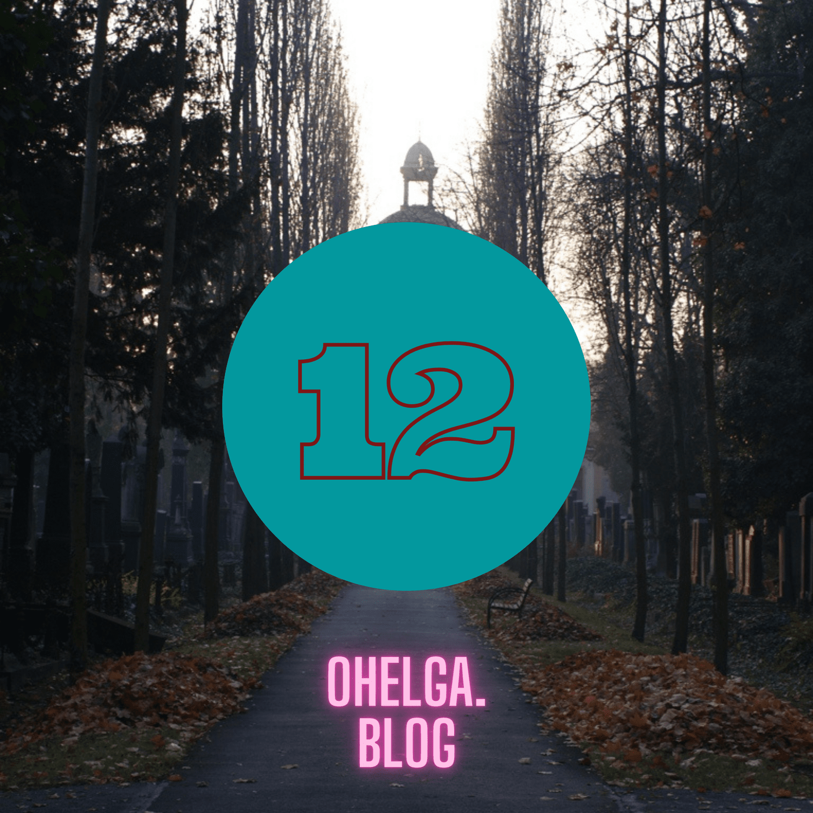

Bingle-bongle, bingle-bongle… Luukussa kaksitoista kuullaan Hollywood -versio joka on inspiroinut laulajia ympäri maailmaa. Men är det en sång eller ett samtal?
Linkit kappaleeseen:
Apple Music:
Spotify:


Bingle-bongle, bingle-bongle… Luukussa kaksitoista kuullaan Hollywood -versio joka on inspiroinut laulajia ympäri maailmaa. Men är det en sång eller ett samtal?
Apple Music:
Spotify:
Kommentit / Kommentarer (1)
<p>Alltså jå, de har ju alla känsla de här gamla inspelningarna, kanske just för att de är så gamla och därför har patina, inspelningstekniken var inte lika avancerad då. Håller med om att det var lite oengagerat. Däremot gillade jag kören, tyckte den lyfte det hela. </p>